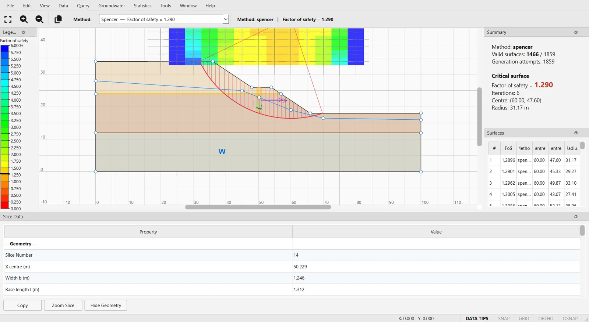

Analysis → Compute runs one search for every method enabled in the project. The Results dock and the status bar give the headline number, Analysis Notes collects everything the run had to say, and the Interpret window lets you examine every surface and every slice. This page covers the four, and how to take results out of the program.
2.8.1Running the analysis#
Choose Analysis → Compute (Ctrl+T, also on the toolbar). Before anything is computed the model is checked, and the run is refused, with the reasons, when the model has no boundaries, when it has no materials, or when a setting cannot be honoured — for example materials that take their pore pressure from a finite-element field that has not been computed, a rapid drawdown whose conditions are not met, or Block Search objects the search cannot use. A refusal is deliberate: the alternative would be a plausible number computed with part of the model ignored.
Every method ticked in Analysis → Project Settings → Methods is run with its own search (Bishop simplified and Janbu simplified in a new project), one after another, while a progress window shows how far the run has got.
In version 0.1.235 the Cancel button of the progress window only closes the window: the analysis continues in the background, and its results appear when it finishes.
When the run ends:
- the model view and the Results dock show the result of the first enabled method;
- the status bar gives its critical value, for example
Critical FoS (bishop_simplified): 1.234, and how many methods were computed. With a design standard active the caption reads Over-design factor (Section 2.11); - everything else the run decided or could not do goes to Analysis → Analysis Notes…;
- if the project has been saved or opened from a file, the result of the first method is also written beside it, with the project's name and the extension
.h5.
The results describe the model as it was when you computed. After editing the model, compute again; an Interpret window keeps showing the run it was opened after.
2.8.2The Results dock#
The Results dock, under the model, shows the method, the number of valid surfaces and the critical value, followed by the 50 surfaces with the lowest factor of safety: #, FoS, Method, Centre X, Centre Y and Radius, with the first row highlighted. It covers the first enabled method only; the Interpret window has every method. The valid count excludes the surfaces that converged but were screened out by a post-analysis check (the m-alpha or the tensile stress check), because those can never be the critical surface.
The list ranks every surface that converged, including those screened out by the m-alpha or tensile stress check. When such a surface has a lower factor of safety than the critical one, it appears above it, and the highlighted first row is then not the critical surface. The value in the header of the dock, and in the status bar, is always the critical one.
2.8.3Analysis Notes#
Analysis → Analysis Notes… opens a window that can stay open while you work. It lists every note of the last run — model-wide notes first, under Model, then the notes about each method's reported surface under the method's id — and Copy all puts them on the clipboard, one per line. Typical notes say that the critical centre lies on the edge of the grid, that a setting was not honoured by the chosen search, that a weak-layer case set had to be truncated or that a design standard was applied. None of them changes a factor of safety; read them before quoting one. The window refreshes after every run.
2.8.4Info Viewer#
Analysis → Info Viewer (Ctrl+I) summarises the model, not the results: the project name, the number of boundaries, materials, supports, distributed loads and line loads, the bounding box, the search method and the author.
2.8.5The Interpret window#
After a Compute, Analysis → Interpret opens a separate, read-only window, OGR Slip2D — Interpret — name, on the results of that run. Each call opens a new window, so two can be compared side by side. It has its own menus and these panels:
- Legend (left): the colour scale of the plotted field, with the critical value marked. View → Show Legend hides it.
- Summary (right): the method, the valid surfaces out of the total, the generation attempts (and how many a focus object rejected), the critical value, its iterations and, for a circle, its centre and radius.
- Surfaces (right): the 100 surfaces with the lowest factor of safety, ranked as in the Results dock. Selecting a row highlights the surface and shows its first slice in Slice Data.
- Slice Data (bottom): every quantity of one slice (see Slice data below).
The Window menu shows or hides Summary, Surfaces and Slice Data; File → Close (Ctrl+W) closes the window. When several methods were computed, the bar at the top has a Method list in which each method is shown with its critical value; choosing one switches every panel, the plot and the legend to that method. With a single method the bar only names it and gives its critical value.

The coloured grid of centres#
With a Grid Search, each centre of the grid is coloured by the lowest factor of safety found there. Move the pointer over the grid to preview the minimum surface of the nearest centre — the status bar gives its factor of safety — and click to select it. For the non-circular searches there is no grid: select surfaces from the Surfaces panel or with Query → Add Query.
View → Contour Options… controls the plot: the field shown (Factor of safety, and, when a finite-element groundwater result exists, Pore pressure, Total head and Pressure head), an automatic range or a fixed Minimum and Maximum, the Number of intervals, the Mode, the Palette, reversed colours and the number format. For the factor of safety the default scale is fixed, from 0 to 6 in 24 bands, so that one deep surface with a high factor does not squash the range that matters. View → Legend Options… sets the decimals, the number of intervals and scientific notation of the legend, and Data → Supplemental Contours draws iso-lines over the filled bands.
2.8.6Choosing which surfaces are drawn#
Three choices at the top of the Data menu decide what is drawn over the model:
- Global Minimum (default): the critical surface only;
- Minimum Surfaces: the lowest surface at each slip centre of the grid;
- All Surfaces: every valid surface analysed.
Data → Filter Surfaces… restricts the last two: By factor of safety (a minimum and a maximum), Only the N lowest, or Surfaces with error code, which shows only the invalid surfaces rejected for one reason. Apply redraws without closing the dialog, Reset clears the filter and Cancel also undoes what Apply did. The global minimum is always drawn.
2.8.7Queries#
A query is a surface you pick out for detailed inspection. Query → Add Query enters a picking mode: the surface under the pointer is previewed with its factor of safety (and, for a circle, its radius and centre), a click keeps it and Esc cancels. Several queries can be kept; each keeps its factor of safety written at its centre, or at the crest end of a non-circular surface. The options below act on the surface you selected last, then on the latest query, and otherwise on the global minimum, for which they create a query.
Slice data#
The Slice Data panel groups the quantities of one slice under Geometry (position, width, base length and angle, height), Forces (weight, pore pressure, surface load, base normal force and the driving shear W·sin α), Stresses (normal and effective normal stress, shear strength, the factor of safety at which equilibrium was solved and the mobilised shear τf/F), Material (name, strength model, unit weight and the cohesion and friction angle at the base) and Interslice forces, which are filled only for the methods that solve them. Copy puts the table on the clipboard as tab-separated text, Zoom Slice centres the view on the slice and Hide Geometry leaves only the slice on screen, for a clean capture. The theory behind the numbers is in Section 3.2.
2.8.8Charts#
- Data → Graph SF Along Slope… plots the factor of safety of every valid surface at its left and right intersections with the ground, against x — either the minimum in each of a number of bins (50 by default) or every point. It shows where along the slope the low factors daylight, which is where to aim the search.
- Data → Graph SF with Time… plots, for a transient groundwater analysis, the factor of safety of the stages marked Calculate SF against time (Section 2.9). It is greyed out without one.
- The Statistics menu holds the probabilistic and sensitivity charts (Section 2.10), and the Groundwater menu the iteration history and convergence plot of a groundwater analysis.
2.8.9Invalid surfaces and error codes#
Data → Summary of Invalid Surfaces… says how many surfaces were rejected out of those generated, grouped by reason, how many were discarded before slicing (for example a circle that does not cut the ground twice), and how many a focus object removed. A surface that fails is not given a factor of safety; where a number is expected, it carries one of the codes of Table 2.8.2, described in full in Section 5.5.
| Code | Reason |
|---|---|
| −120 | Tensile stress at a slice base (Tensile stress check) |
| −112 | m-alpha below its limit (m-alpha check) |
| −111 | No converged factor of safety |
| −101 | Any other rejection |
To see where the rejected surfaces are, use Surfaces with error code in Data → Filter Surfaces…. A blank patch in the coloured grid is usually explained there.
2.8.10Exporting results#
| Command | Writes |
|---|---|
| File → Export Image… | The view as it is on screen, as PNG or JPEG. |
| Edit → Copy Image | The same view to the clipboard, as a bitmap (also on the toolbar). |
| File → Export Data (CSV)… | One row per valid surface, sorted by factor of safety: rank, factor of safety, method, centre, radius, x of the two ends, iterations and convergence. |
| Data → Export Raw Data… | One row per analysed surface, valid or not: centre, radius, x of the two ends and the factor of safety or the error code in its place. Copy puts it on the clipboard as tab-separated text; Save… writes a .txt (tabs) or .csv (commas) file. |
| Data → Export Slice Data (CSV)… | The slices of the selected surface, or of the critical one, with the method's own per-slice results. |
| Statistics → Export Statistics Data… | The probabilistic samples (Section 2.10). |
| Groundwater → Export All Nodal Values… | Total head, pressure head and pore pressure at every node of the mesh (Section 2.9). |
A PDF report of the analysis is produced from the main window with File → Generate Report…; images, DXF drawings and scripted runs are covered in Section 2.12. The Data menu also holds two support commands, Support Force Diagram… and Back Analysis…; supports are covered in Section 2.6.
2.8.11Commands without effect in version 0.1.235#
These Interpret-window commands do nothing, or less than their name says, in version 0.1.235:
- Groundwater → Phreatic Surface, Piezometric Lines, Flow Vectors and Streamlines can be ticked but have no effect. Flow vectors and the free surface are drawn by Groundwater → Interpret Groundwater in the main window.
- Groundwater → Contour Options… stores its settings but nothing is drawn with them; contour the groundwater fields with View → Contour Options… instead. Groundwater → Define User Data… evaluates the expression at every node and reports its range, but does not plot it.
- Tools → Measure and Tools → Dimension Length have no effect.
- View → Data Tips and the DATA TIPS indicator of the status bar have no effect; the preview of the surface under the pointer is always on.
- Data → Support Force Analysis… lists every support of the model with its capacity; it does not compute the force each one takes on the critical surface.